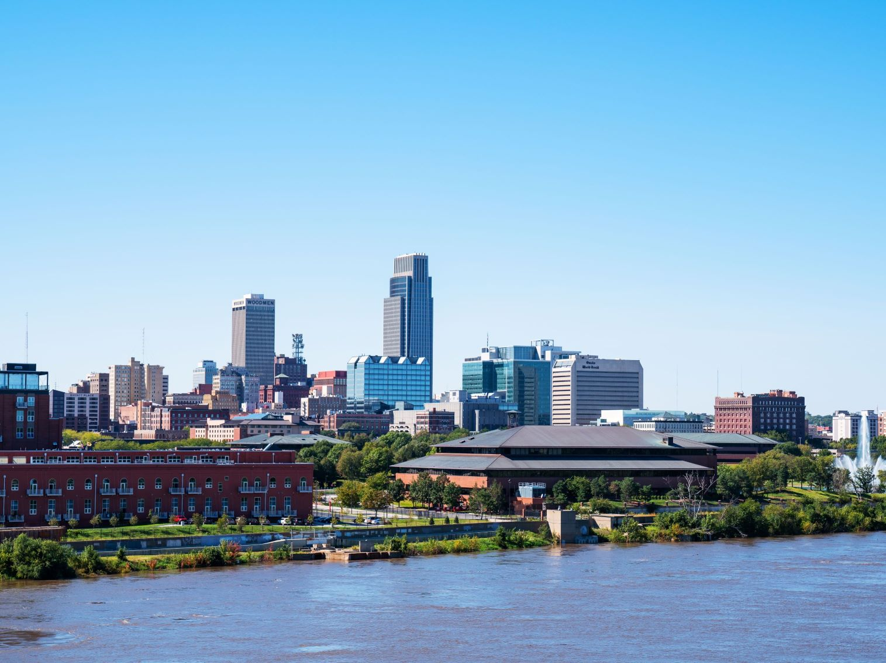
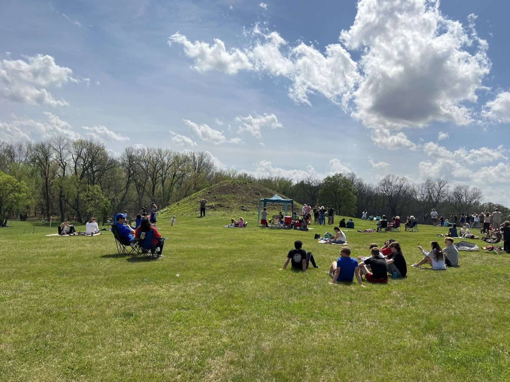
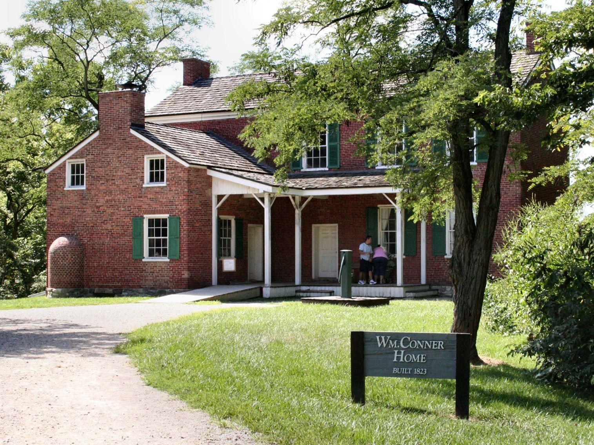

Indiana Travel Guide
Watch the Indy 500, stroll the Indiana Dunes' Lake Michigan shores, and explore Indianapolis' arts scene amid the Hoosier State's rolling hills.
Places to See in Indiana
Indiana Dunes National Park
National Park located along the southern shore of Lake Michigan, is renowned for its stunning sandy beaches, diverse ecosystems, and recreational opportunities. Visitors can explore towering sand dunes, hike through lush forests, and enjoy birdwatching in this unique natural area. The park also offers educational programs and scenic views, making it a popular destination for outdoor enthusiasts and nature lovers alike.
Indianapolis
Capital city of Indiana, is a vibrant urban center known for its rich history, cultural attractions, and sports enthusiasm. The city boasts a variety of museums, including the Indianapolis Museum of Art and the Children's Museum of Indianapolis, which is one of the largest in the world. Sports fans can visit the iconic Indianapolis Motor Speedway, home to the famous Indy

Chimney Rock National Historic Site
Mike Tigas from Columbia, MO, United States, CC BY 2.0, via Wikimedia Commons; Image Size Adjusted
Cities
Chimney Rock National Historic Site
Mike Tigas from Columbia, MO, United States, CC BY 2.0, via Wikimedia Commons; Image Size Adjusted
National Protected Areas

Ash Hollow State Historic Park
Chris Light, CC BY-SA 4.0, via Wikimedia Commons; Image Size Adjusted

Toadstool Geologic Park
Brian Kell (Bkell), Public domain, via Wikimedia Commons; Image Size Adjusted
Landmarks and Landscapes
Overview
Indiana is a Midwestern state of about 6.9 million people, known for auto racing, basketball, limestone, and rolling farmland. Indianapolis is the capital and largest city, and the state's nickname, the "Hoosier State," is of uncertain origin. The name Indiana means "land of the Indians."
Visitors come for the Indianapolis 500 and the Indianapolis Motor Speedway, the sand dunes and beaches of Indiana Dunes National Park, and the Amish communities of Shipshewana. Others come for the college towns, the hills and covered bridges of southern Indiana, the Ohio River town of Madison, and Notre Dame in South Bend.
Geography
Indiana lies between Lake Michigan on the northwest and the Ohio River on the south. Northern Indiana was shaped by glaciers, with lakes, dunes, and flat farmland, the central part is a gently rolling till plain, and southern Indiana has unglaciated hills, limestone caves, and forests. The Wabash River flows across the state to join the Ohio. Hoosier Hill, at 1,257 feet (383 m), is the highest point, and the state is split between Eastern and Central time zones.
History
Indiana was home to the Miami, Potawatomi, Shawnee, and Delaware peoples, and the Mississippian town at Angel Mounds was a large center. French fur traders arrived in the 1700s, and the British took control in 1763. In 1779, George Rogers Clark captured Vincennes, and the area joined the Northwest Territory. Indiana became the 19th state in 1816, and Abraham Lincoln spent his boyhood in the south. The state grew with canals, railroads, and farming, and it became an industrial center for steel, automobiles, and pharmaceuticals.
Indianapolis
Indianapolis, the state capital and largest city, is in the center of the state and is known as the "Crossroads of America." It is best known for motorsports: the Indianapolis Motor Speedway, which opened in 1909, hosts the Indianapolis 500 on Memorial Day weekend, and the Speedway Museum displays race cars and the famous Borg-Warner Trophy. Downtown has the Indiana State Capitol, the Soldiers and Sailors Monument on Monument Circle, and the Indiana War Memorial. The Children's Museum of Indianapolis is the largest in the world, Newfields combines an art museum with gardens, and the Eiteljorg Museum focuses on Native American and Western art. Visitors also tour the Benjamin Harrison Presidential Site, walk the Central Canal, and visit the Kurt Vonnegut Museum. The city also hosts the NFL's Colts and the NBA's Pacers.
Indiana Dunes National Park
Indiana Dunes National Park stretches for 15 miles along the southern shore of Lake Michigan in northwest Indiana, about an hour from Chicago. Established as a national lakeshore in 1966 and redesignated a national park in 2019, it protects sand dunes, beaches, oak savannas, bogs, marshes, and prairies, and is one of the most biologically diverse parks in the country for its size. West Beach is a popular spot for swimming and hiking, and Mount Baldy, a large "living dune" that moves inland about four feet a year, offers a steep climb to a lake view. The park also includes the historic Chellberg Farm, Bailly Cemetery, and the Century of Progress Homes moved from the 1933 Chicago World's Fair. Nearby Indiana Dunes State Park has more beaches and trails, and the best weather for swimming is from June through August.
National Protected Areas
Indiana has a small but notable set of national park sites. Indiana Dunes National Park protects 15 miles of Lake Michigan shoreline with dunes, wetlands, and prairies. George Rogers Clark National Historical Park in Vincennes honors the Revolutionary War victory, and Lincoln Boyhood National Memorial preserves the farm where the future president lived from age 7 to 21. The Ohio River Scenic Byway also runs along the state's southern border.
State Parks and Historic Sites
Indiana's state parks are especially strong in the south. Turkey Run has sandstone gorges and covered bridges, McCormick's Creek, Brown County, and Clifty Falls offer woods and waterfalls, and Falls of the Ohio has a 390-million-year-old fossil bed. Historic sites include Angel Mounds, Conner Prairie, and the Lincoln State Park and New Harmony. Saint Meinrad Archabbey is a Benedictine monastery open to visitors.
Seasons and When to Visit
May is the busiest month in Indianapolis, with the Indy 500 on Memorial Day weekend. Summer is warm and humid and good for the Indiana Dunes beaches and state park swimming. Fall brings colorful foliage in Brown County and the southern hills, and winter is cold and snowy, especially near Lake Michigan, though it is a good time for hiking, bird watching, and holiday events. Spring storms and tornadoes are possible.
This article uses material from the Wikipedia article "Indiana", which is released under the Creative Commons Attribution-Share-Alike License 3.0. Additional information was drawn from National Park Service, Indiana State Parks, and Visit Indiana.